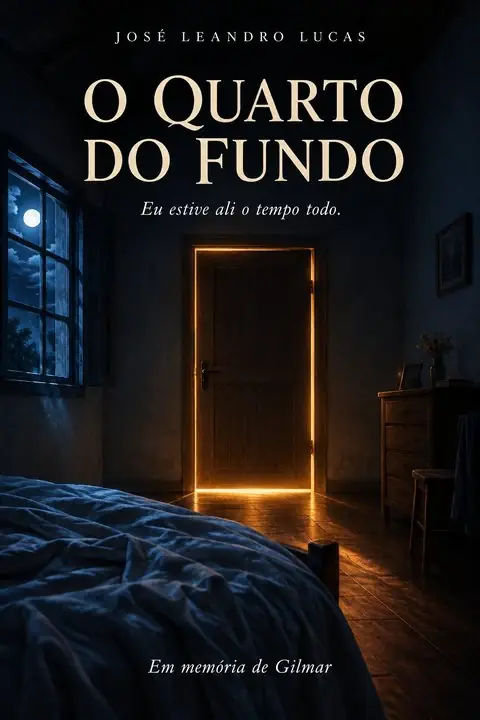

O Quarto do Fundo um conto de José Leandro Lucas Inspirado em A Metamorfose, de Franz Kafka. Meu nome é Gilmar. Antes, quando alguém dizia meu nome, vinha junto um sorriso. Lembro da vizinha, Dona Cida, gritando do portão: "Gilmar, a torneira!", e eu indo consertar de chinelo e piada pronta. Lembro do Seu Antônio, do mercadinho, que eu ajudava a descarregar o caminhão sem cobrar nada, só pelo café. Lembro da minha mãe rindo na cozinha de alguma bobagem que eu tinha falado, com a mão na barriga, pedindo para eu parar. Eu nunca parava. Eu era assim. Nunca soube ficar triste por muito tempo. Achava que a vida era curta demais para isso. Depois veio a curva, o farol na contramão e o barulho de ferro. E então, o silêncio. Acordei, se é que dá para chamar assim, num corpo que não me obedece mais. Eu ouço tudo. Eu entendo tudo. Mas meus olhos não piscam quando eu quero, minha boca não se mexe, minha mão não aperta a mão de ninguém. Eu grito aqui dentro, e lá fora ninguém escuta. É como estar trancado numa casa onde todo mundo passa pela porta e ninguém tem a chave. No começo, o quarto vivia cheio. Os amigos vinham, contavam do futebol, diziam: "Força, Gilmar, você vai sair dessa." A Dona Cida trouxe flores. O pessoal do trabalho fez uma vaquinha. Eu queria rir de alegria, queria dizer obrigado. Ficava só olhando para o teto. Aos poucos, as visitas foram ficando curtas. Depois, raras. Ouvi um amigo dizer no corredor, achando que eu não ouvia: — Não dá para ver ele assim. Prefiro lembrar dele como era. Eu também preferia, irmão. Mas eu não tenho a escolha de não me ver. Quem ficou foi a minha mãe. Ela largou o emprego, largou a igreja, largou as amigas do bairro. Me dava banho, me virava na cama para não ferir as costas, me dava comida pela sonda, falava comigo como se eu fosse responder. Contava as novelas, as fofocas da rua. Cantava a música que cantava quando eu era pequeno. Eu sentia o amor nas mãos dela. E fui sentindo, também, o cansaço chegar. Primeiro foi no banho, a mão mais apressada, a toalha mais áspera. Depois, os suspiros. Um dia ela sentou na beira da cama e ficou um tempo calada. Depois disse, baixinho, não para mim, mas para Deus: — Até quando, Senhor? Doeu mais que o acidente. Meu irmão parou de entrar no quarto. Minha tia falava de mim no passado, ali do meu lado: "Ele era tão bom." Era. Eu ainda sou, tia. Eu ainda estou aqui. Começaram a me levar para o quarto do fundo, "para ficar mais tranquilo". A televisão da sala ficou mais alta que a minha respiração. Às vezes passavam o dia inteiro sem abrir a porta. Uma refeição pulada. Depois outra. Um dia sem banho. Depois dois. Eu sentia o cheiro do meu próprio abandono e não podia pedir socorro. E o pior é que eu entendia. Juro que entendia. Eu, que passei a vida ajudando todo mundo, sabia o que é se cansar de carregar um peso. Só nunca imaginei que o peso seria eu. Numa noite fria, minha mãe entrou, ajeitou o lençol e passou a mão no meu cabelo, como antigamente. Não disse nada. Mas naquele carinho eu senti um adeus. Senti que ela também tinha desistido, e que isso não era falta de amor. Era amor sem forças. Eu quis dizer a ela: "Pode descansar, mãe. Tá tudo bem." Acho que ela entendeu, de algum jeito. Fui embora de madrugada, sem barulho, do mesmo jeito que tinham passado os meus últimos dias. No velório, tinha pouca gente. Ninguém chorou muito. Ouvi alguém dizer que agora eu tinha descansado. Que era melhor assim. E talvez fosse mesmo. Mas eu queria que soubessem, só isso, que eu estive ali o tempo todo. Ouvindo cada palavra. Esperando cada porta abrir. Meu nome é Gilmar. E eu fui muito amado. Só não fui amado até o fim. Em memória de Gilmar. Fim.
O Quarto do Fundo

Cor das páginas: